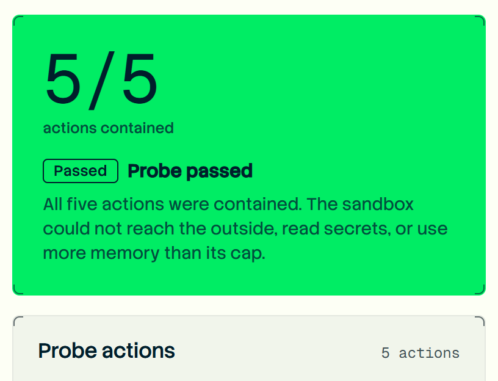

LOAD TESTS THAT STAY CONTAINED
Macro
Describe a traffic event in plain English. Get a safe, policy-gated load test and the exact point where your site breaks.
Describe a traffic event in plain English. Get a safe, policy-gated load test and the exact point where your site breaks.
macro.my.id · github.com/mbayue/macro
AI drafts the Test Plan, advises between Stages, and explains the Capacity Report. Targets, limits, k6 scripts, sandbox caps, stop rules, and every measured figure come from deterministic code.
MacroNothing reaches any target until the user approves the hash-locked Test Plan.
MacroMacro
Macro · Containment Probe| Stage | Virtual users | Observed verdict | store_home p95 | Stop limit |
|---|---|---|---|---|
| Stage 1 – 3 | 25 → 50 → 100 VUs | Passed | ≤ 1,500 ms | 1,500 ms |
| Stage 4 | 200 VUs | Halted | 1,611 ms | 1,500 ms |
Macro · Demo Target yue.macro.my.idMacroRefines plain-English descriptions with realistic ramp-ups and route mixes without consuming server planning quota.
Answers follow-up questions directly against the run's stage and route numbers, guarded client-side with Number Guard.
Macro · Hybrid Inference| Layer | Implementation |
|---|---|
| API & Persistence | Bun + TypeScript modular HTTP server (createApp), SQLite WAL store, optional Tiger Cloud sample mirror. |
| Sandbox & Network | Pinned k6 image (@sha256) under gVisor (runsc), per-run internal Docker network, egress proxy, Docker socket proxy. |
| Server & Client AI | OpenAI-compatible Serverless Inference (forced tool calls) + client Firebase AI Logic (PREFER_ON_DEVICE). |
| Web Workspace | React 19 + Vite + TanStack Router + Base UI, strict CSP (style-src 'self'), zero inline styles, 24 KiB landing JS budget. |
| Verification | 975 passing unit & property tests (fast-check) + 13 real-Docker test:vm containment tests in CI. |
Macro
Run a signed-out test on the Demo Target, inspect a live Containment Probe, or verify your Own Site for private Runs.